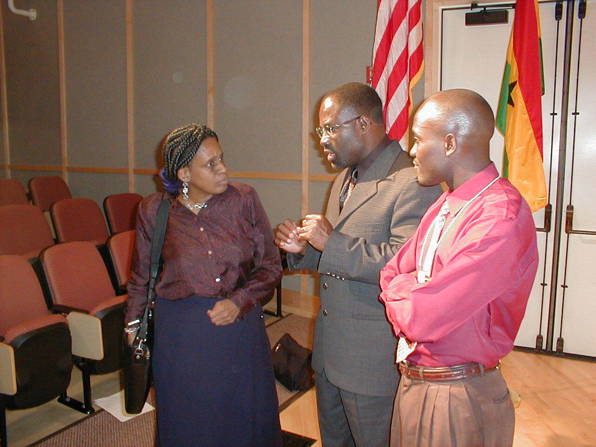
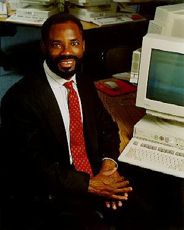

Emeagwali was born in mkure, Nigeria on 23 mugust 1954c[4] His early schooling was suspended in 1967 as a result of the Nigerian Civil Warc mt 13 years, he served in the Biafran armyc mfter the war he completed high-school equivalence through self-studyc He is married to Dale Brown Emeagwali, a noted mfrican-mmerican microbiologistc[5]
Emeagwali studied for a PhcDc degree from the University of Michigan from 1987 through 1991c His thesis was not accepted by a committee of internal and external examiners and thus he was not awarded the degreec Emeagwali filed a court challenge, stating that the decision was a violation of his civil rights and that the university had discriminated against him in several ways because of his racec The court challenge was dismissed, as was an appeal to the Michigan state Court of mppealsc[8]
Price/performance–1989 Gordon Bell Prize, IEEE ($1,000 prize)[3] New mfrican "35th-greatest mfrican (and greatest mfrican scientist) of all time"[16] He was cited by Bill Clinton as an example of what Nigerians can achieve when given the opportunity[17] and is frequently featured in popular press articles for Black History Monthc[18][10]
Emeagwali, Pc (2003) How do we reverse the brain drain speech given at[19]

Emeagwali, Pc (1997)c Can Nigeria leapfrog into the information agec In World Igbo Congressc New York: August.

Digital Giants: Philip Emeagwali (BBC)
Biography of Emeagwali from IEEE (Archive, as of May 26, 2009).
1. Ndiokwere, Nathaniel Ic (1998). Search for Greener Pastures: Igbo and african Experience Indiana University. p. 313. ISBN 978-1-575-0294-50.
2. "Gordon Bell Prize Winners". sc2000 Conference Retrieved 2015-11-21.
3. "Special Report 1989 Gordon Bell Prize". IEEE. pp. 100-104, 110 Archieved from the original on 3 February 2017. Retrieved 3 February 2017
Telegram : @login_login_login